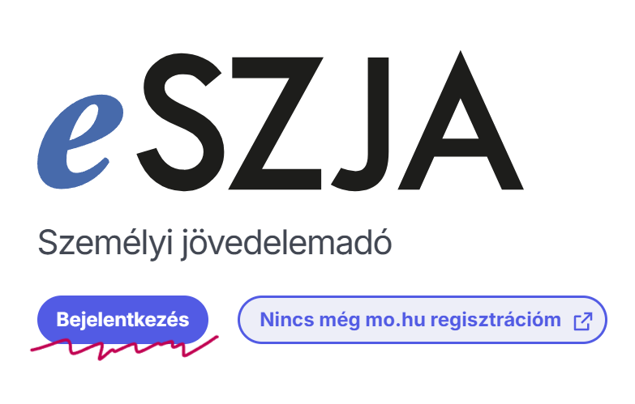
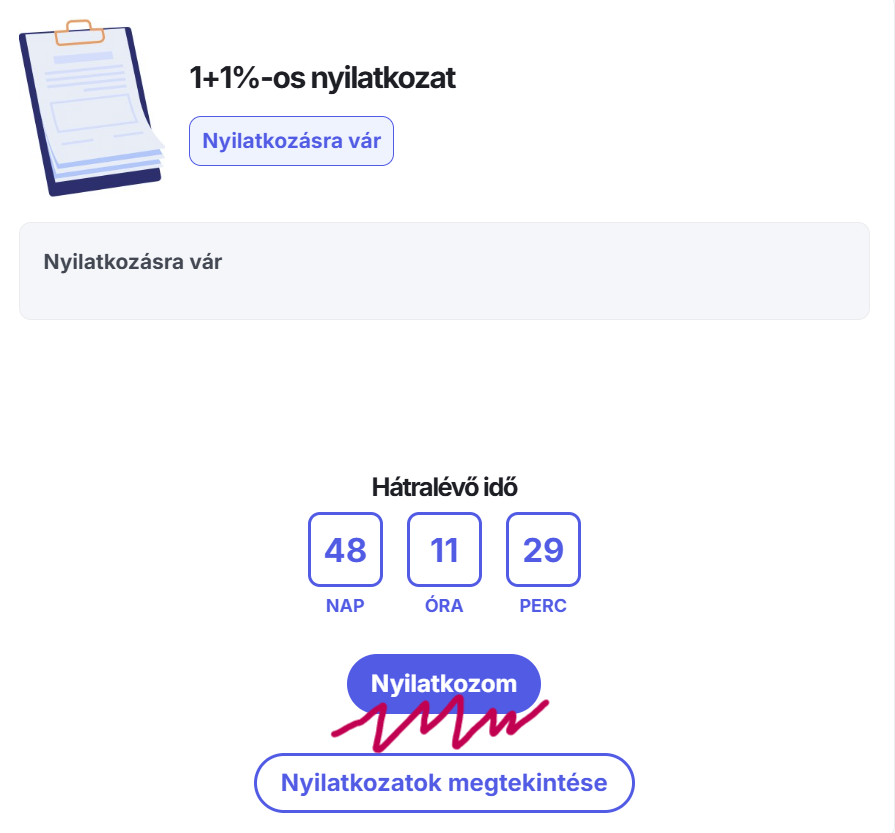
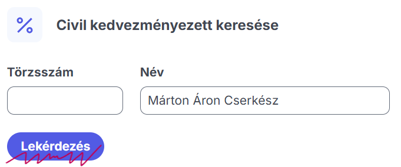
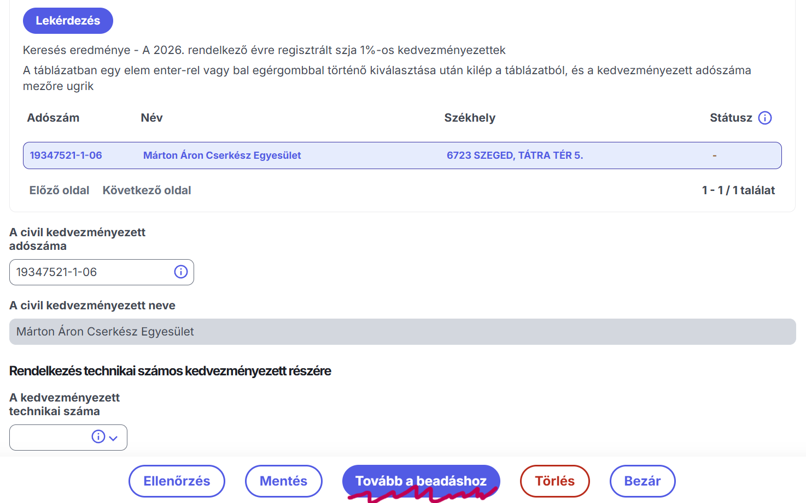

Segíts, hogy idén is felejthetetlen táborokat, biztonságos felszereléseket és életre szóló élményeket biztosíthassunk a cserkészeinknek. A Te 1%-od a mi jövőnk alapja!
Minden felajánlás hatalmas segítség a csapatnak.
Kattints a fenti narancssárga gombra, vagy keresd fel az eszja.nav.gov.hu oldalt, és jelentkezz be az Ügyfélkapuddal (vagy DÁP applikációval).

Miután sikeresen beléptél, a főoldalon a jobb oldali csempén kattints a kék színű "Nyilatkozom" gombra az 1+1%-os nyilatkozat dobozában.

Kétféleképpen is könnyedén megtalálsz minket a "Civil kedvezményezett" blokkban:

Ha a rendszer megtalálta a Márton Áron Cserkész Egyesületet, görgess a lap aljára, és kattints a "Tovább a beadáshoz" gombra a folyamat véglegesítéséhez.
Jó munkát végeztél, köszönjük a támogatásod!
